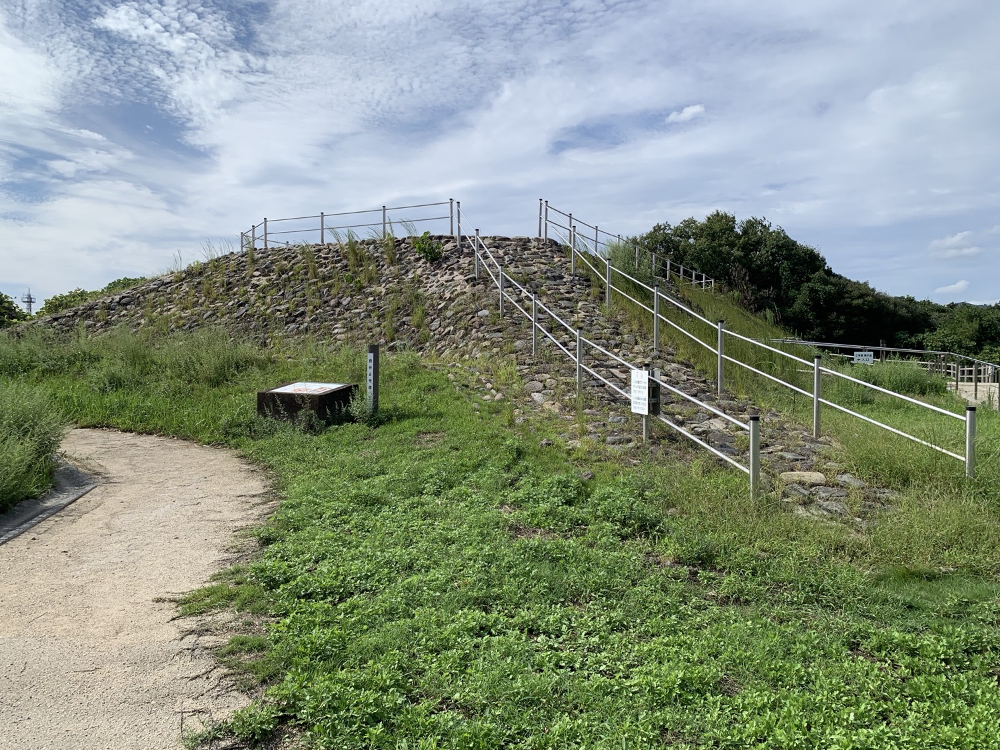
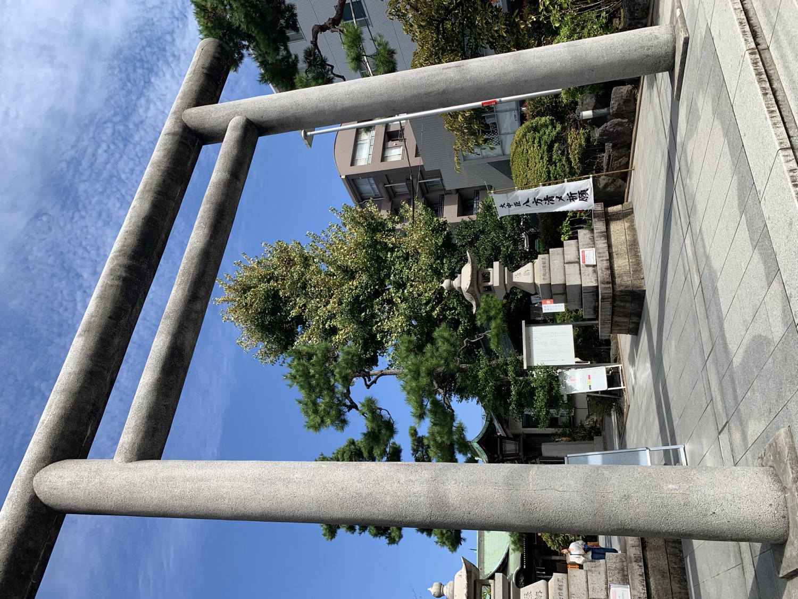
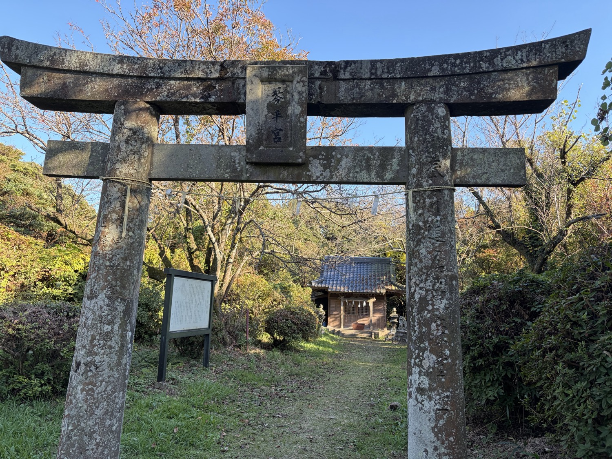
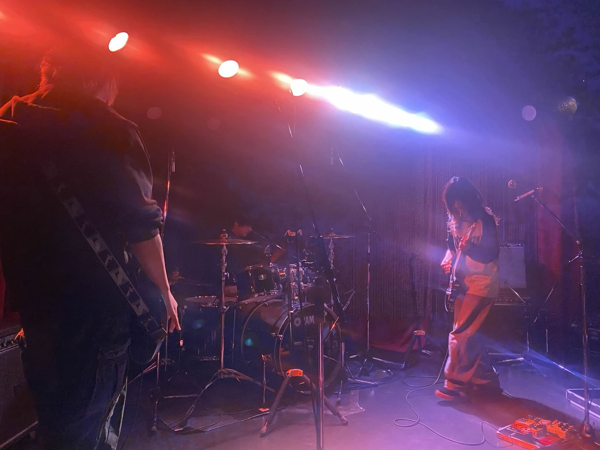
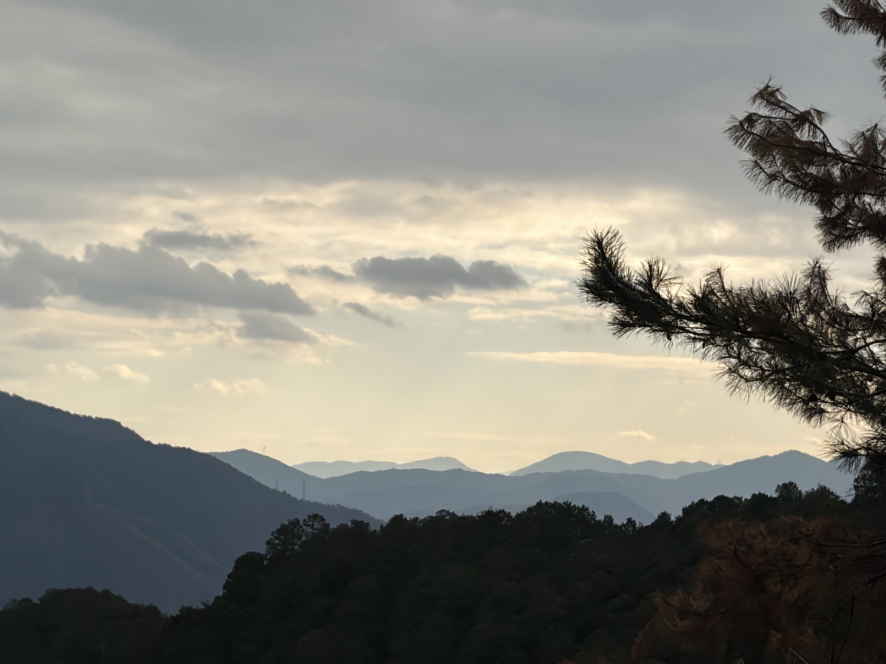

Portfolio & Archive
本屋敷 健太
Kenta Motoyashiki
進化生物学・数理生物学を専攻し、ヒトの心性や感情の進化的基盤を数理モデルで探究。九州大学大学院修了後、2026年春より東京にて社会人として勤務しています。科学教育や教職、日本伝統文化の探求、音楽・演技など、領域横断的な好奇心とともに活動を続けています。
Profile & Expertise
Certifications / 資格
- 中学校・高等学校教諭一種免許状（理科）
- 宗教文化士
- ディープラーニング G検定
Teaching Experience / 教育指導歴
- 2024年 理科指導（中高生対象 / 1年間）
- 2025.10–2026.3 理科指導
Honors & Awards / 受賞歴
-
2023.02
九州大学 チャレンジ&クリエイション（C&C） 総長賞 優秀賞
-
2022.02
九州大学 チャレンジ&クリエイション（C&C） 総長賞 最優秀賞
-
2021
iGEM Competition 2021 Silver Medal（世界大会銀賞）
-
2019
日本生物学オリンピック 本選 銅賞
Biography / 略歴
-
2026.04 –都内企業 勤務開始
社会人として東京を拠点に新たなキャリアをスタート。
-
2026.03九州大学大学院 統合新領域学府 未来共生デザインコース 修了
修士（デザイン学）。数理生物学研究室にてヒトの心理特性の進化に関する数理モデリング研究に従事。
-
2024.04九州大学大学院 統合新領域学府 未来共生デザインコース 入学
-
2024.03九州大学 理学部 生物学科 卒業
学士（理学）。数理生物学研究室に所属（2023.04〜）。
-
2020.04九州大学 理学部 生物学科 入学
-
2020.03修道高等学校 卒業
-
2001広島県にて出生
Research & Publications
数理生物学および行動進化学の手法を用い、ヒトの感情・心理メカニズムがどのような環境選択圧のもとで維持されてきたかを数理モデルによって探究しています。
Affiliations / 学会所属
- 日本数理生物学会（JSMB）
- 日本人間行動進化学会（HBES-J）
Research Topics / 研究テーマ
うつ・不安関連遺伝子の進化モデル
なぜ適応度を下げるように見える不安や抑うつに関連する遺伝子多型（セロトニントランスポータ等）がヒト集団内に高頻度で維持されているのか。地域間の環境格差や季節変動、ゲーム理論的相互作用を取り入れた数理モデルによる理論的解明を行っています。
Conference Presentations / 学会・口頭発表
2025
-
国際口頭
"Anxiety-causing alleles are favored in moderately stressful environments" Annual Meeting of the Society for Mathematical Biology (国際数理生物学会)
-
口頭発表
「季節性情動障害に関連するセロトニントランスポータ結合パタンの季節変動」 理論進化生態フォーラム
2024
-
ポスター
「うつ関連遺伝子アレル頻度の地理的勾配を生み出した地域間環境格差に関する数理モデル：東アジアは過酷だったか？ユートピアだったか？」 第17回 日本人間行動進化学会年次大会
-
口頭発表
「うつ関連遺伝子の進化モデル」 日本数理生物学会 年次大会
-
口頭発表
「うつ病関連遺伝子の進化モデル：5-HTT遺伝子多型の維持メカニズムの解明」 理論生物学若手の会
-
口頭発表
「うつ関連遺伝子の進化モデル」 ゲーム理論ワークショップ
2023
-
口頭発表
「うつ病関連遺伝子の進化モデル」 日本数理生物学会 年次大会（2023.09）
-
ポスター
"Model for the evolution of depression-related genes" 理論生物学若手の会
Activities & Media
学術研究の枠にとどまらず、日本文化への探求、音楽演奏、そして幼少期からの表現活動など、多様なフィールドでの記録です。
Japanese Culture & Thought / 日本文化
宗教文化士としての視点や、日本の伝統的な美意識・精神性を学び探求しています。自然観や死生観、歴史の中で育まれた文化の奥行きを現代の思考とどう結びつけるかを思索しています。
Music & Drums / 音楽活動
長年ドラム演奏に取り組み、リズムの構造やアンサンブルのダイナミクスを追求しています。バンドでのセッションを通じて、言葉を超えたコミュニケーションとしての音楽を楽しんでいます。
Acting & Media Works / 出演歴
子役時代に出演した映画作品およびラジオドラマの記録です。
-
映画（主演）
夏休みの地図
主演 / 監督: 深作健太 / 脚本: 鴨義信（全国劇場公開作品）
-
映画
ハッピーランディング
為永尊 役 / 監督: 天野千尋 / 脚本: 鴨義信 / 主演: 中村ゆり
-
ラジオドラマ
赤ヘル1975
マナブ 役 / 原作: 重松清（NHK ラジオドラマ）
Gallery / 写真
活動のひとこまや日常の記録です。（クリックで拡大表示）




